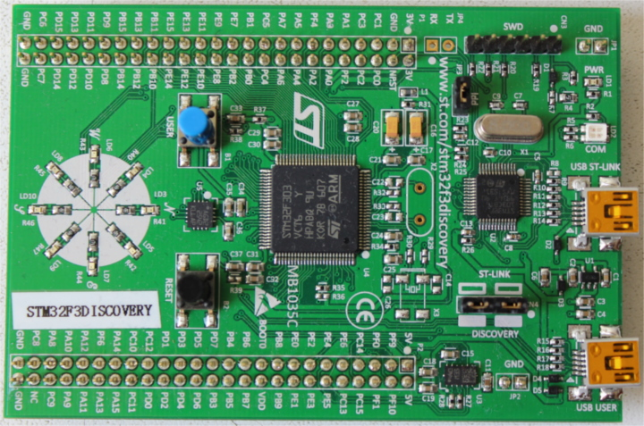

آشنایی با سختافزار شما
بیایید با سختافزاری که قرار است با آن کار کنیم آشنا شویم.
STM32F3DISCOVERY (معروف به «F3»)

این برد شامل چه چیزهایی است؟
-
یک ریزکنترلر STM32F303VCT6. این ریزکنترلر دارای موارد زیر است
-
یک پردازندهٔ تکهستهای ARM Cortex-M4F با پشتیبانی سختافزاری از عملیات ممیز شناور با دقت ساده و حداکثر بسامد کلاک 72 مگاهرتز.
-
256 KiB حافظهٔ «Flash». (1 KiB = 1024 بایت)
-
48 KiB حافظهٔ RAM.
-
انواع پیرامونیهای مجتمع مانند تایمرها، I2C، SPI و USART.
-
ورودی/خروجی همهمنظوره (GPIO) و انواع دیگر پایهها که از طریق دو ردیف هدر در کنار برد در دسترساند.
-
یک رابط Mini-USB که از طریق درگاه USB با برچسب «USB USER» در دسترس است.
-
-
یک شتابسنج بهعنوان بخشی از تراشهٔ LSM303DLHC.
-
یک مغناطیسسنج بهعنوان بخشی از تراشهٔ LSM303DLHC.
-
8 LED کاربر که به شکل قطبنما چیده شدهاند.
-
یک ریزکنترلر دوم: یک STM32F103. این ریزکنترلر در واقع بخشی از برنامهریز/اشکالزدای روی برد است و به درگاه Mini-USB با نام «USB ST-LINK» متصل است.
برای فهرست دقیقتر امکانات و مشخصات بیشتر این برد، به وبسایت STMicroelectronics سر بزنید.
یک هشدار: اگر میخواهید سیگنالهای خارجی به برد اعمال کنید، احتیاط کنید. پایههای ریزکنترلر STM32F303VCT6 ولتاژ اسمی 3.3 ولت میپذیرند. برای اطلاعات بیشتر به بخش 6.2 Absolute maximum ratings در راهنما مراجعه کنید